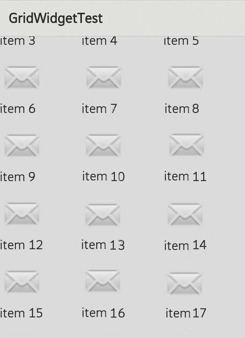

GridWidget shows items in two-dimensional grid. Like ListWidget, the items in the grid come from the item provider.
This tutorial will introduce how to use GridWidget. You will create a scrollable image gird.

Suppose we have 7 image resources in our app(image_1 to image_7).
Vector *pIds = new Vector();
pIds->append(R::drawable::image_1);
pIds->append(R::drawable::image_2);
pIds->append(R::drawable::image_3);
pIds->append(R::drawable::image_4);
pIds->append(R::drawable::image_5);
pIds->append(R::drawable::image_6);
pIds->append(R::drawable::image_7);
class MyProvider: public IListItemProvider {
public:
MyProvider(Vector *pIds, Page *pPage)
: mpIds(pIds), mpPage(pPage) {
GLOGENTRY();
}
virtual ~MyProvider() {
GLOGENTRY();
}
virtual int32_t getCount() const {
GLOGENTRY();
if (mpIds != NULL) {
return static_cast(mpIds->size());
} else {
return 0;
}
}
virtual int64_t getItemId(int32_t position) const {
GLOGENTRY();
return position;
}
virtual gaia::core::Widget *createItemWidget(int32_t position) {
GLOGENTRY();
ImageWidget *pImage = new ImageWidget(mpPage);
return pImage;
}
virtual int32_t getItemWidgetType(int32_t position) const {
GLOGENTRY();
return 0;
}
virtual gaia::core::Widget *getItemWidget(int32_t position, gaia::core::Widget *pItemWidget, gaia::core::Widget *pParent) {
GLOGENTRY();
if (pItemWidget != NULL) {
ImageWidget pImage = static_cast(pItemWIdget);
if (pImage != NULL) {
pImage->setImageResource(mpStrings->itemAt(position));
}
} else {
GLOGE("pItemWidget is NULL!");
}
return pItemWidget;
}
virtual int32_t getWidgetTypeCount() const {
GLOGENTRY();
return 1;
}
virtual bool hasStableIds() const {
GLOGENTRY();
return true;
}
virtual bool isEmpty() const {
GLOGENTRY();
return mpIds->size() == 0;
}
virtual bool areAllItemsEnabled() const {
GLOGENTRY();
return true;
}
virtual bool isEnabled(int32_t position) const {
GLOGENTRY();
return true;
}
private:
Vector *mpIds;
Page *mpPage;
};
The most important virtual functions are getItemWidget and createItemWidget. We create new widgets in createItemWidgetd, and setup it in getItemWidget. You can see the tutorial of item provider for more detail.
MyPage::onInit(Persistence *savedInstanceState) {
Scene* pScene = Scene::SceneFactory(static_cast(this));
GridWidget *pGridWidget = new GridWidget(this);
MyItemProvider *pProvider = new MyProvider(pIds, this);
pGridWidget->setItemProvider(pProvider);
pScene->attachController(pGridWidget);
pScene->setupSceneLayout();
}